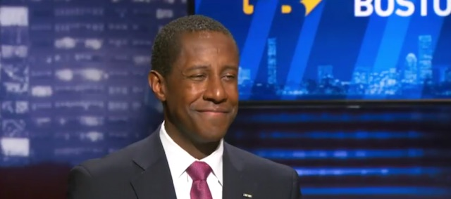

<!DOCTYPE html>
<html xmlns="http://www.w3.org/1999/xhtml" lang="" xml:lang="">
<head>
  <meta charset="utf-8" />
  <meta name="generator" content="pandoc" />
  <meta name="viewport" content="width=device-width, initial-scale=1.0, user-scalable=yes" />
  <meta name="author" content="David Ehrens" />
  <title>One down and two to go</title>
  <style>
    html { line-height: 1.5; font-family: Georgia, serif; font-size: 18px; color: #1a1a1a; background-color: #fdfdfd; } body { margin: 0 auto; max-width: 40em; padding-left: 30px; padding-right: 30px; padding-top: 8px; padding-bottom: 30px; hyphens: auto; word-wrap: break-word; text-rendering: optimizeLegibility; font-kerning: normal; } @media (max-width: 600px) { body { font-size: 0.9em; padding: 1em; } } @media print { body { background-color: transparent; color: black; font-size: 12pt; } p, h2, h3 { orphans: 3; widows: 3; } h2, h3, h4 { page-break-after: avoid; } } p { margin: 1em 0; } a { color: Crimson; /* #ee0000; */ text-decoration:none; } a:hover { color: Orange; } img { max-width: 100%; display:block; margin-left:auto; margin-right:auto; } h1, h2, h3, h4, h5, h6 { margin-top: 1.4em; } h5, h6 { font-size: 1em; font-style: italic; } h6 { font-weight: normal; } ol, ul { padding-left: 1.7em; margin-top: 1em; } li > ol, li > ul { margin-top: 0; } blockquote { margin: 1em 0 1em 1.7em; padding-left: 1em; border-left: 2px solid #e6e6e6; color: #606060; } code { font-family: Menlo, Monaco, 'Lucida Console', Consolas, monospace; font-size: 85%; margin: 0; } pre { margin: 1em 0; overflow: auto; } pre code { padding: 0; overflow: visible; } .sourceCode { background-color: transparent; overflow: visible; } hr { background-color: #1a1a1a; border: none; height: 1px; margin: 1em 0; } table { margin: 1em 0; border-collapse: collapse; width: 100%; overflow-x: auto; display: block; font-variant-numeric: lining-nums tabular-nums; } table caption { margin-bottom: 0.75em; } tbody { margin-top: 0.5em; border-top: 1px solid #1a1a1a; border-bottom: 1px solid #1a1a1a; } th { border-top: 1px solid #1a1a1a; padding: 0.25em 0.5em 0.25em 0.5em; } td { padding: 0.125em 0.5em 0.25em 0.5em; } header { margin-bottom: 2em; text-align: center; font-family: Arial, Helvetica, san-serif; } h1.title { color: #777777; margin: 2px; } p.author, p.date { margin: 2px; font-style: italic; font-size: smaller; } #TOC li { list-style: none; } #TOC a:not(:hover) { text-decoration: none; } code{ white-space: pre-wrap; } span.smallcaps{ font-variant: small-caps; } span.underline{ text-decoration: underline; } div.column{ display: inline-block; vertical-align: top; width: 50%; } div.hanging-indent{ margin-left: 1.5em; text-indent: -1.5em; } ul.task-list{ list-style: none; } .display.math{ display: block; text-align: center; margin: 0.5rem auto; }
  </style>
</head>
<body>
<header id="title-block-header">
<h1 class="title">One down and two to go</h1>
<p class="author">David Ehrens</p>
<p class="date">2017-06-27 08:00</p>
</header>

<p></p>
<p>On Monday, June 26th Mardee Xifaras graciously hosted a Meet and Greet for Democratic gubernatorial candidate <a target="_blank" href="http://settiwarren.com/">Setti Warren</a> at her law offices in New Bedford. Warren spoke to a group of roughly twenty-five visitors about his two terms as mayor of Newton, his military service, Newton’s budget surplus, its improved AAA bond rating, and educational improvements under his administration. Warren referred to two of his governing principles several times: transparency and outcomes-based decision-making.</p>
<p>Warren identified Income Inequality as the #1 challenge for Massachusetts. He supports a number of economic justice issues: Single-Payer Healthcare; Free Public College; the Fair Share Amendment; Paid Family Leave; and a $15/hour minimum wage. In short order Warren managed to check off a few boxes from Progressive Massachusetts 2017 <a target="_blank" href="http://www.progressivemass.com/190legislativeagenda">Legislative Priorities</a>, though many were not discussed.</p>
<p>Warren is an unapologetic advocate of raising revenue. He talked about setting reasonable goals and then backing into the funding. It requires considerable guts nowadays to argue that government has a function, that the function is to help people, and that these functions require adequate budgets. But after the Meet and Greet I stood out on the sidewalk comparing notes with two other visitors and they expressed concern that, if not handled cautiously, this could easily sink a candidate.</p>
<p>The economic and budget questioning went on for a while. Neither community policing, judicial reform, <a target="_blank" href="https://malegislature.gov/Bills/190/h2359">decriminalization of poverty</a>, immigration, civil liberties, regional transportation, nor the governor’s relationship with the House leader ever came up in conversation. It was a friendly first meeting and Warren didn’t really get any hardball questions.</p>
<p>Sitting as we were in an office in New Bedford, I asked Warren what he as governor would do about rogue sheriffs. At first he wanted to talk about Safe Communities, which he as mayor brought to Newton. I clarified that I was interested in the <em>discretion</em> a governor had over the fourteen county sheriffs in the Commonwealth. I reminded Warren that Duval Patrick had once <a target="_blank" href="http://www.tauntongazette.com/article/20120306/News/303069912">curtailed</a> Tom Hodgson’s budget and cited the June 25th <a target="_blank" href="https://www.bostonglobe.com/opinion/editorials/2017/06/24/bristol-county-deserves-better-sheriff-than-hodgson/ipneUr85oZ9R6qPlrSZ4zO/story.html">Boston Globe editorial on Hodgson’s</a> recklessness in Bristol County. Warren acknowledged that it’s an important issue to local voters, promised to look into what a governor could do, and an aide said he’d follow up with me.</p>
<p>I would have liked to ask Warren – who campaigns on his service in Iraq, on his father’s service in Korea, and his grandfather’s service during the Battle of the Bulge – what he thinks of our perpetual wars or what he thinks of Clinton’s and <a target="_blank" href="https://www.democracynow.org/2004/2/20/john_kerry_now_kerry_backs_iraq">Kerry’s</a> records on militarism and foreign policy. If this ambitious politician is on his way up the food chain, I’d like to know <em>now</em> – not when he runs for U.S. Senate or a higher office – what he thinks of the U.S. military budget, our foreign policy, or the DHS Fusion centers that operate in the Commonwealth. Would Warren crack down on state police spying on citizens? Would Warren as governor follow New York Democratic governor <a target="_blank" href="https://www.thenation.com/article/andrew-cuomos-bds-blacklist-is-a-clear-violation-of-the-first-amendment/">Cuomo’s example</a> and impose a blacklist on the BDS movement or continue leading trade delegations to Israel, as Charlie Baker does? What kind of relationship would Warren have with Massachusetts defense contractors? The ACLU? Black Lives Matter?</p>
<p>For that matter I’d like <em>all</em> the Democratic contenders to weigh in on these issues. Despite what the Massachusetts Democratic Party thinks, there is no <a target="_blank" href="http://localhost/democrats/fp-planks/">artificial division</a> between <a target="_blank" href="http://localhost/zionism/line-sand/">foreign policy</a> and domestic policy. Not when <a target="_blank" href="http://localhost/militarism/weaponized-budget/">68% of our discretionary budget goes for war</a>. Not when state Democrats regularly wade into national issues.</p>
<p>Setti Warren’s resume follows a familiar pattern: high school class president; university; politics; law school; political appointments; fundraising; political consulting; military intelligence; a failed bid for the Senate; a successful run as mayor; and now the governor’s office. Warren’s father <a target="_blank" href="http://baystatebanner.com/news/2010/apr/07/joseph-warren-a-passionate-public-servant/">Joseph</a> was a Dukakis advisor and Warren himself has held positions on political campaigns and in government under Bill Clinton and John Kerry.</p>
<p>If there is one thing that nags at me it’s that his is the profile of an ambitious career Democrat. Contrast Warren’s resume with Paul Feeney’s background, for example. Everything about <a target="_blank" href="https://www.youtube.com/watch?v=86bgQzk1BOg">Setti Warren’s speech</a> at the June convention in Worcester came across as well-engineered, maybe even a tad slick. After three decades of non-stop war I find appeals to military patriotism distasteful, but this is <a target="_blank" href="https://www.nationaljournal.com/s/653497/veterans-lead-democrats-governor-offensive">apparently a national strategy</a> designed to make the Democratic Party <a target="_blank" href="http://www.politico.com/story/2017/06/21/seth-moulton-2018-endorsements-239809">more appealing</a> to the Right. But, in an informal setting where visitors sat around a law office conference table and fielded questions, Warren came off as genuine and answered credibly.</p>
<p>A few visitors have already praised Warren, but love doesn’t normally happen on a first date. Democrats ought to be cautious: an affable, telegenic Republican already owns the governor’s office and Massachusetts Democrats are <a target="_blank" href="http://localhost/democrats/dartmouth-election/">notoriously complacent</a>. The Democrat to beat Baker had better be damned good and they’d better be a progressive. And <a target="_blank" href="http://www.tauntongazette.com/article/20120306/News/303069912">progressives</a> should be wary: this race in the Blue Heart of America may say a lot about where the Democratic Party is really headed.</p>
<p>Warren, Gonzalez, and Massey each will have an opportunity to present their vision for the state, answer tough questions, and convince us of their sincerity and electability.</p>
<p>But it’s early. It’s one down and two more candidates to go.</p>
</body>
</html>
